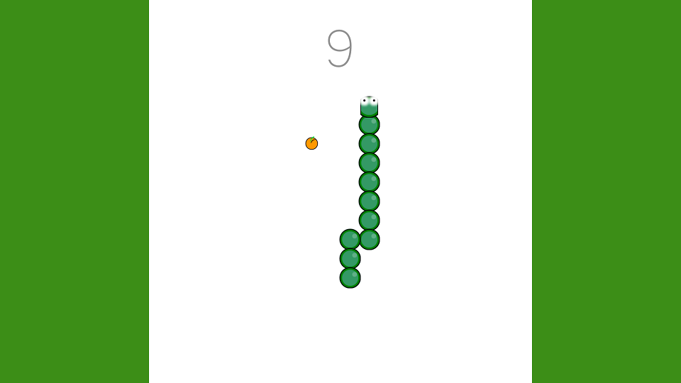

Jeux
Stellaris: Astral Planes (2023)
Trailer de lancement de Stellaris: Astral Planes
Stellaris: Astral Planes est un DLC pour le jeu 4X de science fiction Stellaris (2016) développé par Abrakam Entertainment en tant que projet externalisé en collaboration avec Paradox Interactive, pour lequel Abrakam avait un haut niveau contrôle. On entend par celà le contrôle du design et de l'implémentation du début à la fin, avec en parallèle l'aide de Paradox tout au long du développement nous donnant leurs conseils et leur aide dès que nécessaire. Ils étaient aussi en charge d'avoir le dernier mot, validant ce qui allait dans le DLC et ce qui devait être retravaillé s'ils l'estimaient nécessaire.
Ce projet a été développé sur une année, commençant en Octobre 2022 pour une sortie en Novembre 2023. C'est le premier projet professionel sur lequel j'aurais eu l'occasion de travailler dessus du début à la fin. Pendant ce temps, j'ai eu l'occasion de travailler sur de nombreuses facettes du projet, incluant le gameplay, la UI et les graphismes. Ce projet tourne dans le moteur propriétaire de Paradox, Clausewitz, qui utilise le C++ pour gérer les systèmes, ainsi qu'un language de script interne chargé du contenu.
Roguebook (2021)
Trailer de lancement
Roguebook est le premier jeu sur lequel j'ai travaillé dans un cadre professionel. Développé par le studio belge Abrakam Entertainment, c'est là que j'ai effectué mon stage de fin d'études. J'ai commencé par apporter de l'aide sur le développement du jeu en faisant principalement du bug fixing. Cependant, c'est sur le portage console du jeu que j'ai passé la plupart de mon temps, notamment sur les Playstation 4, Playstation 5, Xbox One et Xbox Series.
Durant ce temps, j'ai eu l'occasion de travailler sur l'implémentation des SDKs de ces consoles pour faire tourner le jeu sur ces plateformes. J'ai aussi travaillé sur les TRCs (Technical Requirement Checklist) et les contraintes apportées par celle-ci nécessitant parfois l'ajout de fonctionnalités non prévues par l'architecture initiale et qu'il faut alors adapter ou contourner. Le projet est séparé en deux parties principales. Le client tourne sous Unity en C#, mais une partie du gameplay est contrôlée par un serveur local développé en C++. Ces deux projets nécessitent d'être portés pour permettre au jeu de fonctionner correctement.
Humankind's Fall (2021)
Trailer du jeu
Humankind's Fall a été réalisé dans le cadre du cours de Laboratoire de Jeux Vidéo à l'UQAC. C'est un autochess 2D avec comme particularité de n'être jouable qu'en solo. Le but est de vaincre les humains afin de mettre un terme au chaos qu'ils ont apporté en faisant tomber la capitale, Vermont. Six personnes ont travaillé sur sa création. Les assets graphiques proviennent de packs préfaits. Le jeu a été réalisé sous Unity en quatre mois. Vous pouvez apprécier mon incroyable doublage dans la bande-annonce.
The Never Too Late Program (2021)

Une usine où le joueur transporte des objets
The Never Too late Program a été créé pour la Blackthornprod Jam 3, qui avait pour thème "Less is More" (Moins est Plus). Dans ce jeu, vous travaillez dans une usine où vous devez transporter des objets d'un point á un autre. Chaque jour, vous devez remplir votre quotas, mais attention ! Si vous allez trop vite, vous recevrez de nouvelles tâches ce qui risque de vous empêcher d'atteindre le but. Les sons et musiques ont été créés par Pierre Bédue. Ce jeu a été créé en utilisant Unity, Blender, Aseprite, Cubase et Audacity.
When I Grow Up (2021)

The game's character
When I Grow Up est un jeu d'une durée de une minute où un petit personnage grandit en trouvant des éléments de son corps. Il a été réalisé pour la Weekly Game Jam 183 dont le thème était "Build a Creature" (Construire une Créature). J'ai particulièrement apprécié le créer mais je n'ai pas eu beaucoup de temps pour travailler dessus, ce qui en fait le jeu le plus cours que j'ai créé. Ce jeu a été créé en utilisant Unity, Blender and FL Studio.
Tower Forge (2020)

Les aliens essayent d'envahir la forteresse naine
Tower Forge est un tower defense que j'ai créé en collaboration avec Johan Poncet. Dans Tower Forge, vous jouez des nains qui defendent leur cité face à une invasion alienne. Ce jeu se distingue d'autres towers defenses en proposant au joueur de construire des tours comme il le désire, en choisissant une combinaison de base/tour pour chacune des tours construites. C'est en effet au joueur de choisir quel élément synergisera bien avec les autres pour s'assurer qu'aucun alien ne passera les défenses. La musique est de Pierre Bédue. Ce jeu a été créé en utilisant Unity, Photoshop, Cubase and Audacity.
Color Race (2020)

Changer sa couleur pour passer les obstacles
Color Race est un jeu d'arcade développé pour mobiles où le joueur doit passer des obstacles colorés. Le seul moyen de survivre est de ne toucher aucun obstacle, à moins que la couleur du joueur soit la même que celle de l'obstacle. Le but du jeu ètait pour moi, en tant que développeur, d'apprendre à publier un jeu sur une plateforme dédiée et comment intégrer des pubs. Color Race a été créé en utilisant Unity, Photoshop, FL Studio and Audacity.
2045 (2020)

Échapper aux lumières pour retrouver sa liberté
En Janvier 2020 a été organisée la deuxième Game Jam de l'ESIR (mon école d'ingénieur). Le thème de cette Gam Jam était "Safe In The Dark" (En sécurité en le noir). Avec mon groupe de quatre personnes dont un autre programmeur, nous avons décidé de faire un jeu multijoueur local où le premier joueur cherche à s'échapper d'une prison. Le deuxième joueur doit l'aider à remplir son but après être devenu "Shadow", une entitée capable de cacher désactiver toute source de lumière et de les désactiver. 2045 a été réalisé en 35 heures en utilisant Unity, Photoshop et Audacity.
Pop-Up Run (2019)

Un voyage dans la ville de l'Internet
Pop-Up run était mon projet pour la GDA Jam en 2019 avec une équipe de quatre personnes. Le thème était "No Signal" (Pas de signal). J'étais sur ce projet le seul programmeur avec une équipe de trois étudiants en art digital. Dans Pop-Up run, vous devez trouver votre voie à travers l'Internet dans un gameplay de type runner tout en devant fermer des pubs s'affichant en continu et couvrant l'écran. Mais attention ! Si vous cliquez sur une pub au lieu de la fermer, cela en fera apparaître d'autres. Ce jeu a été créé en utilisant Unity, Photoshop, 3DS Max and Audacity.
Snake (2019)
Une production originale
Ceci est ma propre version du célèbre jeu "Snake" ainsi que mon premier jeu créé sous Unity en dehors de tutoriels. Cela m'a beaucoup appris sur comment utiliser Unity, ce que le moteur de jeu était capable de faire, et pourquoi je devais en utiliser un.